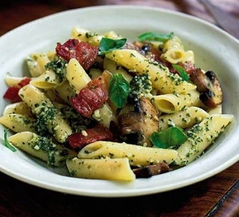

Return to Index
Bacon and Mushroom Pasta

Description
A simple one-pan pasta dish with bacon, mushrooms and pesto - ready in under 30 minutes
Ingredients
- 400g of penne pasta
- 250g of button mushrooms
- 8 rashers of bacon
- 4 tablespoons of pesto
- 200ml of creme fraiche
- A handful of basil leaves
Steps
- Cook pasta in boiling water in a large pan. Slice the mushrooms and cut bacon into bite size pieces
- Reserve a few drops of the cooking water, drain pasta. Fry bacon and mushrooms until golden.
- Tip pasta and water back into pan, stir over heat for one minute.
- Take the pan off the heat, stir in pesto and creme fraiche with basil and stir to combine
- Sprinkle remaining basil to serve.